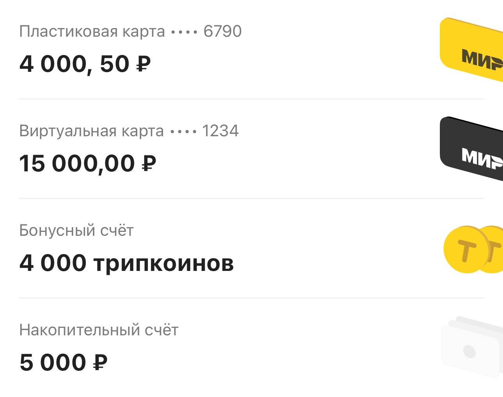
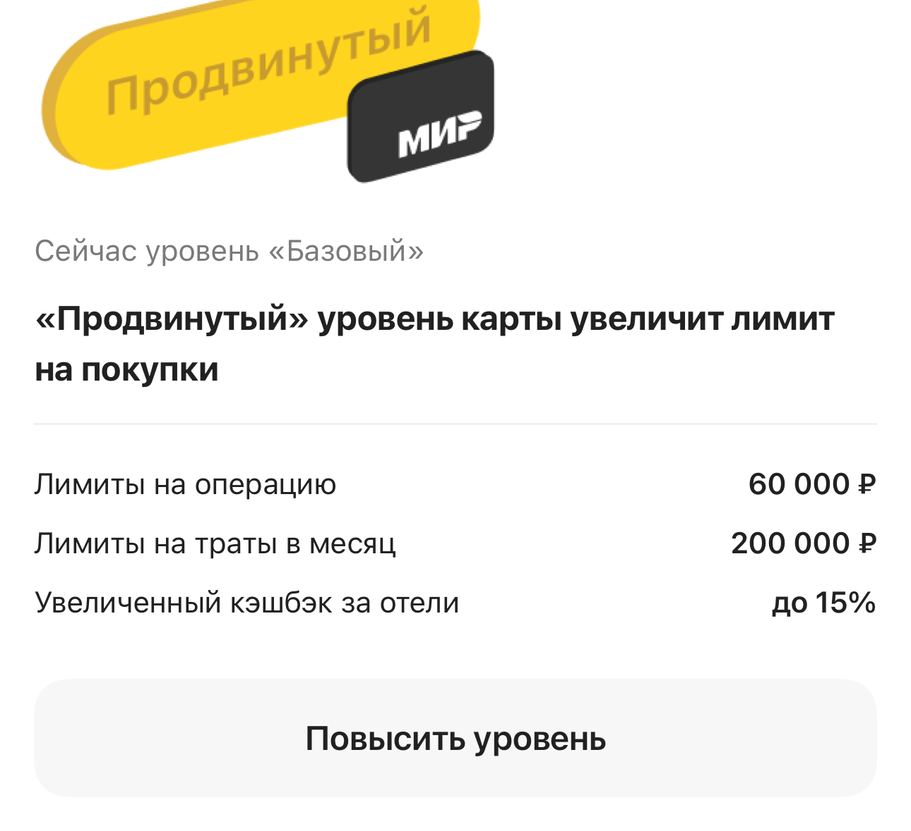
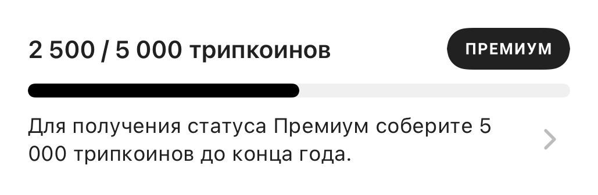

Кэшбэк и счета: балансы, карты и состояния экрана
2023–2025 · OneTwoTrip / iOS
Разрабатывал Solar Cash и перевод раздела кэшбэка на UI 2.0: UIKit, TCA, интеграция нескольких источников данных, балансы карт и бонусов, статусы и обработка ошибок.
Смотреть экраны и состояния · Вся галерея
Контекст
Лояльность зависит от статуса пользователя, доступных бонусов, наличия карты и состояния счетов. Экран должен объяснять условия и показывать корректный набор действий даже при неполных данных или ошибке сети.
Мой вклад
- Добавлял Solar Cash в профиль, историю начислений и списаний, пустые состояния и интеграцию бонусов в отельный сценарий.
- Переводил кэшбэк OTT на UI 2.0: заголовок, виртуальную/физическую карту, трипкоины, кэшбэк за путешествия, повышенный кэшбэк, информационные блоки и баннеры.
- Разделял legacy и новый экран, добавлял конфигурацию, feature flag, обработку ошибок и последующее удаление старой реализации.
- Писал и обновлял тесты для разных статусов, выпуска карты, отсутствия интернета, некорректного ответа backend и обновления данных после изменения уровня карты.
Технологии
Swift, UIKit, TCA, Swift Concurrency / async-await, PropsBuilder, Swinject, REST / mapping, SnapshotTesting, XCTest, XCUITest.
Примеры задач
| Сценарий | Что я делал | Инженерный акцент |
|---|---|---|
| Бонусный баланс Solar Cash | Добавлял историю начислений и списаний, пустые состояния и интеграцию в отели. | Финансовые данные в продуктовом интерфейсе. |
| Новый экран кэшбэка | Переводил блоки карты, трипкоинов и повышенного кэшбэка на UI 2.0. | Миграция сложного экрана с сохранением правил. |
| Управляемое включение UI | Разделял старую и новую реализации, добавлял конфигурацию и feature flag. | Постепенное внедрение изменений. |
| Пограничные состояния | Проверял разные статусы карты, ошибки сети и обновление после смены уровня. | Систематическая проверка финансовых сценариев. |
Инженерные решения
- Редизайн кэшбэка сам по себе не должен менять финансовые правила: основная задача явно сохраняла функциональность при переходе на новые стили.
- Статус пользователя и возможности карты образуют матрицу состояний. Проверка только одного успешного экрана здесь недостаточна.
- Данные после выпуска или повышения уровня карты нужно обновлять в родительском разделе, а не только закрывать дочерний экран.
Качество и проверки
- Развивал unit-, snapshot- и UI-проверки уровней лояльности, информационных блоков, ошибок и переходов.
- UI-тесты связывают продуктовые действия и итоговое состояние экрана.
Результат и границы
Пользовательские финансовые состояния получили обновлённое представление и систематическую проверку. Рост дохода или использования программы не утверждается без продуктовой аналитики.
Разбор сложного сценария
- Проверить сессию. Разделить гостевое состояние и загрузку персональных финансовых данных.
- Собрать данные. Получить конфигурацию и данные счетов, карт, статуса и кэшбэка.
- Построить блоки. Показать подходящие балансы, условия и действия с учётом состояния карты и пользователя.
- Обновить после действия. После выпуска или повышения уровня карты синхронизировать родительский экран.
Упрощённый маршрут одного сценария. Ветки ошибок и дополнительные действия разобраны ниже.
Один экран, несколько независимых источников
Кэшбэк объединяет денежные балансы карт, трипкоины, накопительный счёт, статус клиента, предложения и баннеры. Я переводил эти блоки на UI 2.0 и подключал конфигурацию и обработку ошибок. В реализации TCA после конфигурации данные нескольких сервисов загружаются через async/await и TaskGroup, а PropsBuilder строит UIKit-компоненты из состояния. Деньги и бонусные единицы имеют разное представление; каждый баланс остаётся связан со своим счётом.
Матрица карт и статусов вместо одного макета
Для виртуальной карты важны наличие и возможность повышения уровня; для пластиковой — отсутствие, выпуск, готовность и ошибка. От этих состояний зависят текст, баланс и доступный переход. Я работал над блоками карт и повышенного кэшбэка, а также обновлением экрана после выпуска и повышения уровня. Сложность здесь — согласовать состояние родительского экрана с результатом дочернего процесса. Кабинет карты, лимиты и операции.
Ошибки сети и проверка финансового интерфейса
Пустое состояние, гость, отсутствие интернета и некорректный ответ сервиса требуют разных проверок. Я добавлял обработку ошибок и развивал unit-, snapshot- и UI-тесты раздела. В коде отдельно учитываются авторизация, загрузка и доступность сети; выход из аккаунта сбрасывает персональное состояние. Snapshot-тесты проверяют блок счетов и варианты повышенного кэшбэка на разной ширине, а UI-сценарии — статусы и обновление после действий.
Экраны и состояния интерфейса
Оригинальные изображения из snapshot-тестов на подготовленных данных. Тип материала указан под каждым примером. Дизайн и общая архитектура создавались командой; мой вклад описан выше. Нажмите на изображение, чтобы рассмотреть детали.
| Кэшбэк: карты и счета | Повышенный кэшбэк и лимиты карты |
|---|---|
 |
 |


| Прогресс до статуса Премиум |
|---|
 |

Сценарии и пояснения к изображениям
- Кэшбэк: карты и счета. Блок экрана кэшбэка с пластиковой и виртуальной картами, бонусным и накопительным счетами. Балансы и маски карт заданы snapshot-тестом. Оригинальный snapshot компонента на тестовых данных.
- Повышенный кэшбэк и лимиты карты. Состояние блока повышения уровня: лимиты на операцию и месяц, условия кэшбэка и действие перехода. Это тестовый пример интерфейса, а не актуальные банковские условия. Оригинальный snapshot компонента на тестовых данных.
- Прогресс до статуса Премиум. Счётчик, прогресс и условия статуса в UI 2.0. Иллюстрация направления лояльности; общий дизайн и тестовый baseline — работа команды. Snapshot-тест на подготовленных данных.
Вся галерея экранов и компонентов
Что можно обсудить на интервью
- Как проверять экран с несколькими финансовыми состояниями?
- Как использовать feature flag при замене существующего раздела?